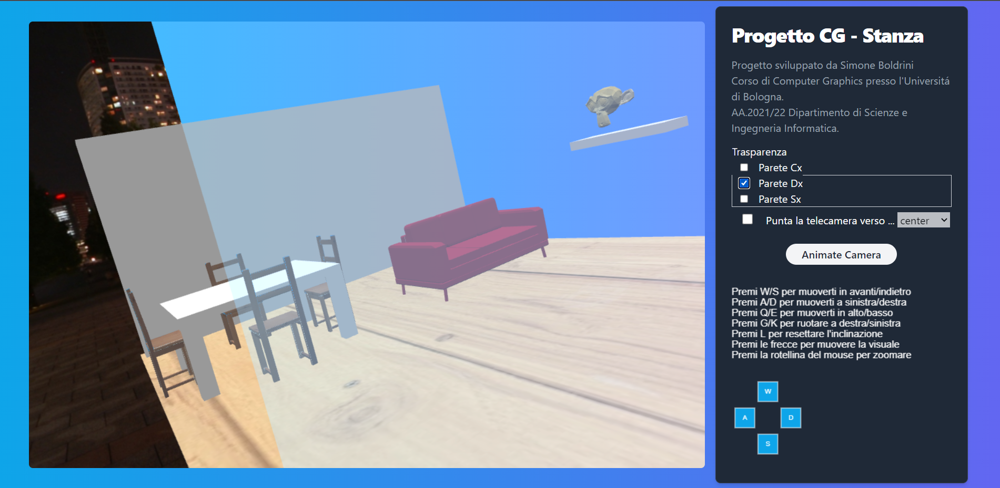

Relazione Progetto Computer Graphics
Simone Boldrini
Introduzione
Il progetto consiste nella realizzazione di 3D Webapp usando WebGL (HTML5, CSS e contesto webgl), linguaggio JavaScript e OpenGL ES SL con browser Chrome
Sorgenti
Main
Main.js é lo script iniziale che viene richiamato dal frammento html, all'interno carichiamo il json che contiene gli elementi della scena( vedi Scene.js).
Inoltre viene istanziato l'oggetto Core che é il motore principale del programma, esso si occupa di caricare le mesh, inizializzare la scena, la camera e i vari controlli.
Infine inizializziamo il programma di render e avviamo lo stesso
Utils
Il file Utils.js contiene un insieme di funzioni che vengono richiamate all'interno di tutto il programma.
Core
La classe Core.js é il motore principale del programma, esso si occupa di caricare le mesh, inizializzare la scena, la camera e i vari controlli.
Metodi
- init Principalmente si occupa di inizializzare le variabili e gli shader
- initScene Prendendo un Oggetto che contiene una lista di mesh inizia ad aggiungere gli elementi al meshLoader che si occuperá a sua volta di chiamare la funzione LoadMesh
- initCamera Inizializza la camera, controllando che sia uno schermo per PC o per smartphone e settando i vari controlli nel caso
- initRender Inizializza il programma di render
- render Avvia la routine di render, richiamando per ogni oggetto della scena il metodo 'render'
Camera
In questa sezione osserviamo le 3 possibili camere che vengono utilizzate per la visualizzazione del mondo 3D.
Abbiamo 3 camere che sono:
- Standard
- Animata
- Per dispositivi mobile
La prima fa uso dei parametri Position,forward,right,up e tiene come parametro di default una fieldOfView
Mentre le altre due camera si muovono attraverso gli assi delle coordinate polari Theta,Phi andando a modificare questi parametri.
La Animate Camera si muove attraverso il metodo #move e gira all'infinito avendo sempre come lookAt il centro della scena (0,0,0) mentre la Camera Smartphone è una camera che si muove in base ai movimenti touch dell'utente.
Andiamo a vedere i metodi della classe Camera:
- Tilt Ruota la visuale della camera in alto o in basso.
- Pan Ruota la visuale della camera a destra o a sinistra.
- Cant Routa la camera lateralmente
- TruckMuove la camera a destra o sinistra mantenendo invariata la direzione della camera.
- Dolly Muove la camera in avanti o indietro, cambiando la direzione di forward.
- Pedastal Alza o abbassa la camera
- ViewMatrix Ritorna la visuale della camera a seconda dell'oggetto che si sceglie di puntare (di default sará il centro)
In seguito sempre dentro alla classe Camera troveremo i controlli per l'interazione dell'utente setCameraControls e l'interazione dal Canvas 2D
Scene
La classe Scene si occupa di gestire gli oggetti che fanno riferimento alle mesh:
- Alias
- Path Obj
- Coords
- Rotate
L'attributo Coords contiene l'offset delle posizioni rispetto a quello effettivamente presente sul file .obj, mentre l'attributo rotate é un booleano che servirá per determinare se applicargli una rotazione o meno.
Object
Classe Object permette di gestire i singoli oggetti della scena e di applicare le varie trasformazioni.
Object é una classe che contiene i seguenti attributi:
- Alias
- Mesh
- Position: offset rispetto alle coordinate x,y,z
- Rotate
e contiene i metodi:
- computer_position Permette di calcolare la nuova posizione avendo calcolato l'offset(si usa nel caso della rotazione)
- compute_idleAnimation Permette di calcolare la rotazione al punto 0,0,0 e la traslazione sull' offset
- render
Funzione che viene richiamata da Core e permette di renderizzare gli oggetti chiamando a sua volta la sua funzione drawScene
Control
In questa sezione parleremo dell'interazione dell'utente con la scena, in particolare dei controlli che permettono di muovere la camera e di interagire con gli oggetti.
Nella prima parte troviamo la possibilitá di applicare le trasparenze alle pareti in modo da poterci vedere attraverso.
Questa funzionalitá é resa possibile andando a modificare l'Alpha degli oggetti che vogiamo rendere trasparenti.

Mentre nella seconda la lista di commandi per interagire con la camera Principale, sempre nel menu troviamo 4 bottoni implementati su un Canvas 2D che ci permette di spostare la camera nelle 4 direzioni.
Troviamo un bottone "Animate Camera" che ci permette di cambiare camera(come giá visto in Camera) passando ad una animazione.
Mentre troviamo anche la possibilitá di cambiare il target della camera, ovvero il punto a cui la camera sta puntando a obiettivi predefiniti come la mesh della scimmia,della tv, del tavolo o del centro(default).
Skybox
Attorno alla nostra scena, troviamo uno sfondo Skybox, ovvero una mesh che viene applicata come sfondo della scena.
Sono caricate 6 immagini(prepareSkyBox()) come texture e costruite in modo da formare una CubeMap, infine una volta renderizzati tutti gli elementi della scena dovremmo potere vedere il nostro sfondo e a seconda di dove andiamo a spostare la visuale della camera, lo skybox si muoverá di conseguenza.
Referenze
Oltre al codice visto a lezione sono state utilizzate le seguenti fonti: